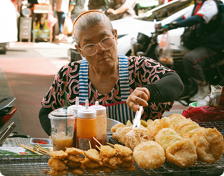
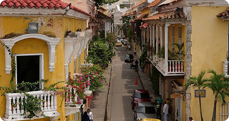
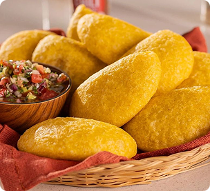

La tradición frita de Cartagena
FritoMapp reúne la tradición frita de Cartagena en una sola app
Genera el código QR único para cada puesto. Al escanearlo, lleva directo al perfil de la cocinera.
Desde hace generaciones, las matronas cartageneras han mantenido viva la tradición de los fritos en las calles de la ciudad amurallada, convirtiendo cada esquina en un espacio lleno de sabor, historia y cultura.
Sus recetas, transmitidas de generación en generación, representan un legado que ha perdurado en el tiempo, donde cada preparación conserva técnicas y secretos únicos que forman parte de la identidad del Caribe colombiano.
Cada arepa de huevo, cada carimañola y cada empanada llevan consigo décadas de saber ancestral, reflejando el amor, la dedicación y la experiencia de quienes han hecho de la cocina tradicional su forma de vida.
El Festival del Frito Cartagenero celebra este patrimonio culinario, reuniendo a las mejores cocineras en un espacio donde los sabores, los aromas y la tradición se convierten en protagonistas.
FritoMapp nace para preservar y difundir este legado, conectando a las personas con las matronas y permitiendo descubrir los sabores auténticos que hacen única a Cartagena.
Desde hace generaciones, las matronas cartageneras han mantenido viva la tradición de los fritos en las calles de la ciudad amurallada, convirtiendo cada esquina en un espacio lleno de sabor, historia y cultura.
Sus recetas, transmitidas de generación en generación, representan un legado que ha perdurado en el tiempo, donde cada preparación conserva técnicas y secretos únicos que forman parte de la identidad del Caribe colombiano.


